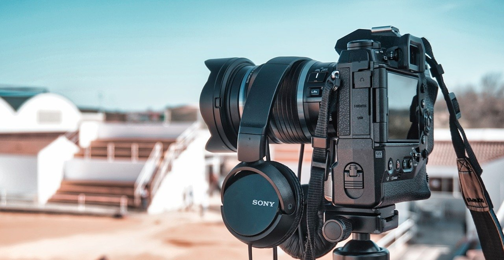
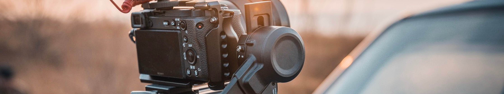
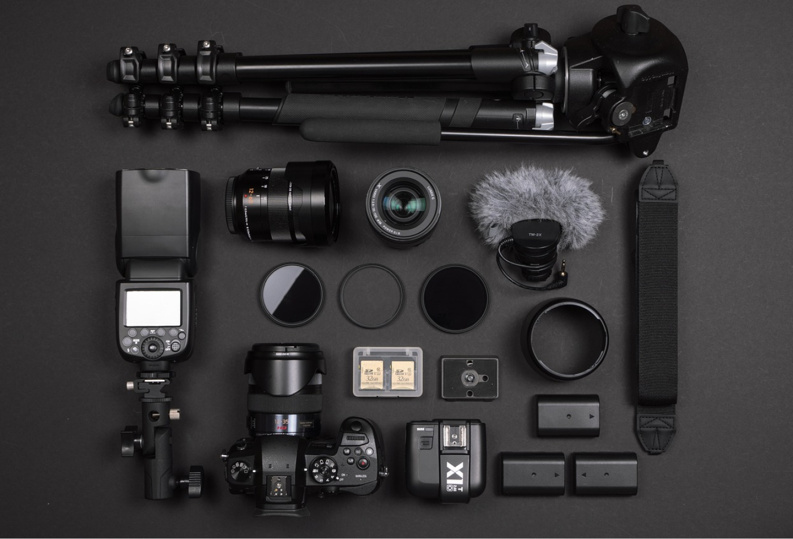
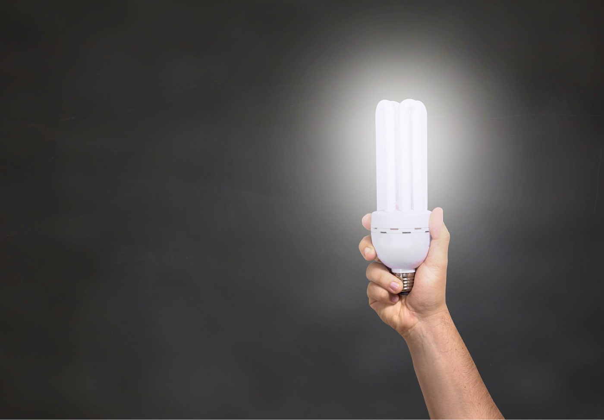
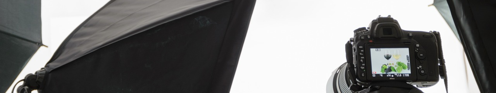
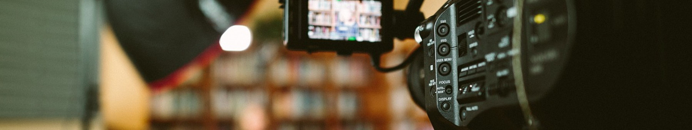
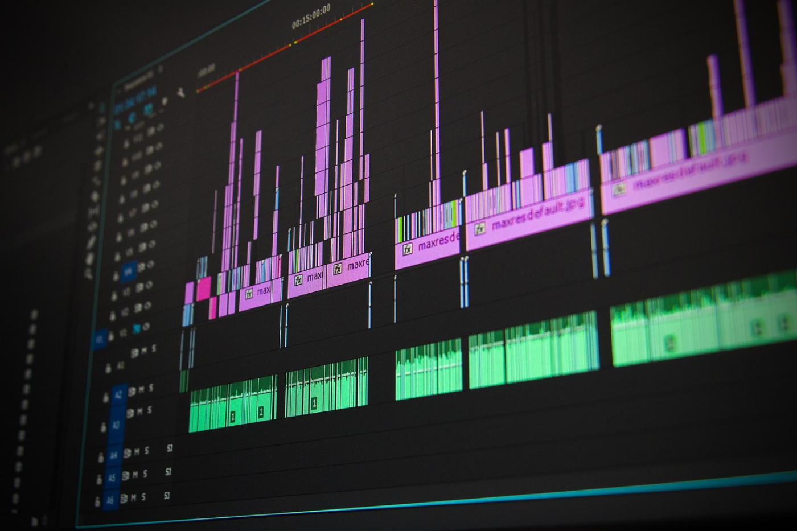
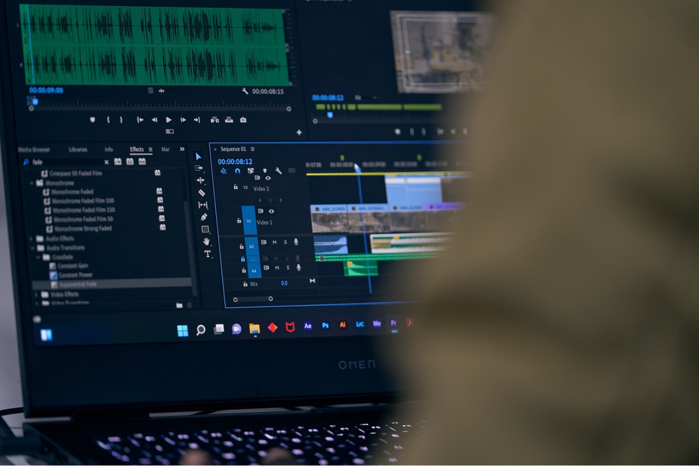

Video
Автор використовує камеру Sony але вся основа підходить і для інших апаратів навіть і для смартфона (при використанні камери смартфона увімкніть ручний режим).

Відеозйомка – це складний процес, який потребує знань, навичок і творчого підходу. Ми розглянемо основні аспекти, які варто врахувати для хорошої відеозйомки:
-
1. Підготовка
-
1.1 Планування
- Сценарій: Напишіть детальний сценарій, який включає діалоги, дії, локації та необхідне обладнання.
- Розкадрування: Зробіть ескізи кадрів, щоб візуалізувати, як буде виглядати відео.
-
1.2 Локація
- Вибір місця: Оберіть місце з хорошим освітленням і акустикою.
- Розвідка локації: Перевірте місце зйомки заздалегідь, щоб уникнути несподіванок.
-
1.1 Планування
-
2. Обладнання
-
2.1 Камери
- Тип камери: Оберіть камеру відповідно до вашого бюджету та вимог (DSLR, бездзеркальна камера, відеокамера чи смартфон).
- Налаштування: Ознайомтесь з основними налаштуваннями камери (ISO, діафрагма, витримка, баланс білого).
-
2.2 Лінзи
- Вибір об’єктива: Використовуйте різні об'єктиви для різних типів зйомок (ширококутний, телеоб’єктив, макро).
-
2.3 Стабілізація
- Штатив: Забезпечує стабільність камери.
- Gimbal: Для зйомки в русі.
- Стабілізатори: Можуть бути корисними для ручної зйомки.
-
2.1 Камери
-
3. Освітлення
-
3.1 Природне освітлення
- Час зйомки: Найкраще знімати вранці або ввечері, коли світло м’яке.
- Відбивачі: Використовуйте відбивачі для управління світлом.
-
3.2 Штучне освітлення
- Типи світильників: LED, флуоресцентні, вольфрамові лампи.
- Розміщення світильників: Використовуйте триточкове освітлення (ключове світло, заповнююче світло, контрове світло).
-
3.1 Природне освітлення
-
4. Звук
-
4.1 Мікрофони
- Типи мікрофонів: Петличні мікрофони, накамерні мікрофони, бум-мікрофони.
- Запис звуку: Записуйте звук окремо, якщо це можливо, для кращої якості.
-
4.2 Акустика
- Місце зйомки: Оберіть місце з хорошою акустикою або використовуйте звукопоглинаючі матеріали.
-
4.1 Мікрофони
-
5. Композиція кадру
-
5.1 Правило третин
- Розміщення об’єктів: Розміщуйте важливі елементи по лініях третин для кращого балансу.
-
5.2 Лінії
- Лінії перспективи: Використовуйте лінії для направлення погляду глядача.
-
5.3 Ракурси
- Різні ракурси: Використовуйте різні ракурси для динаміки і цікавості кадру.
-
5.1 Правило третин
-
6. Монтаж
-
6.1 Програмне забезпечення
- Програми: Adobe Premiere Pro, Final Cut Pro, DaVinci Resolve та інші.
- Основи монтажу: Навчіться базовим прийомам монтажу, таким як нарізка, склейка, робота з аудіо.
-
6.2 Колірна корекція
- Баланс білого: Вирівнюйте кольори між різними кадрами.
- Колірні профілі: Використовуйте LUTs для стилізації відео.
-
6.1 Програмне забезпечення
-
7. Креативність і експеримент
-
7.1 Надихайтесь
- Дивіться фільми та відео: Аналізуйте роботи інших для натхнення.
-
7.2 Експериментуйте
- Тестуйте різні підходи: Не бійтеся пробувати нові техніки і підходи до зйомки.
-
7.1 Надихайтесь






